Chapter 4: Inverse Manipulator Kinematics PDF p.1
4.1 Overview PDF p.2
This chapter covers the following topics:
- Definition of inverse kinematics
- Workspace definition
- Algebraic vs. geometric
- Algebraic solution by reduction to polynomial
- The wrist-partitioned (Pieper's) method
4.2 Definition of Inverse Kinematics PDF p.3
Inverse KinematicsThe problem of computing joint variables (angles or displacements) from a desired end-effector pose. Unlike forward kinematics, IK generally requires solving systems of nonlinear transcendental equations and may yield zero, one, or multiple solutions.Craig, Introduction to Robotics, 4th ed., Ch. 4: The inverse kinematics computes the values of the joint variables that would result in a desired position or orientation of the end-effector.
Generally, it is desired for the manipulator to follow a particular path. For example, pick up an object and place it elsewhere. Therefore, a numerical desired position and orientation of the end-effector must be established.
In inverse kinematic calculations, given the numerical value of ${}^{0}_{N}T$, it is desired to find the set of joint translation/rotational displacements that will result in such numerical matrix.
Each ${}^{i-1}_{i}T$ is a function of the $q_i$ joint displacement ($\theta_i$ for revolute and $d_i$ for prismatic joints).
Forward kinematics is a straightforward chain of matrix multiplications: given $\theta_1, \ldots, \theta_n$, compute ${}^0_n T = {}^0_1 T(\theta_1) \cdots {}^{n-1}_n T(\theta_n)$. Each step is a well-defined function evaluation, there is exactly one answer, and the computation is $O(n)$ matrix multiplies.
Inverse kinematics reverses this mapping, but the reversal is fundamentally harder for three reasons:
- Nonlinearity. The forward map involves products of sines and cosines of the joint angles. Inverting these yields systems of coupled transcendental (trigonometric) equations that have no general closed-form solution. For a 6-DOF robot, the 12 scalar equations from ${}^0_6 T$ are all coupled through shared unknowns $\theta_1, \ldots, \theta_6$.
- Non-uniqueness. Multiple joint configurations can produce the same end-effector pose (up to 16 for a general 6R manipulator). The forward map is many-to-one, so its "inverse" is one-to-many.
- Existence is not guaranteed. A desired pose may lie outside the workspace, in which case no solution exists. The forward map always produces a valid pose, but not every pose is reachable.
In mathematical terms, the forward kinematics map $f: \mathbb{R}^n \to SE(3)$ is a smooth, surjective-onto-its-image function. Its inverse $f^{-1}$ is a set-valued mapping that may be empty, and computing it requires solving a system of nonlinear equations.
Key Equations PDF p.3
The forward kinematics chain:
$${}^{0}_{e.e}T = {}^{0}_{1}T(q_1) \; {}^{1}_{2}T(q_2) \; \cdots \; {}^{n-1}_{n}T(q_n) \; {}^{n}_{e.e}T$$Therefore, the problem of inverse kinematics lies in comparing each element of the matrices and solving for all the joint displacements, $q_i$'s.
Remarks PDF p.4
- The desired position/orientation to be calculated for inverse kinematics should be within the workspace of the manipulator -- which is based on the length of the links, joint kinematic layout, and joint limits.
- Redundant manipulators (more than 6-DoF) have an infinite number of solutions (configurations).
- Depending on the number of joints and the structure of the manipulator, the inverse kinematics may have no solutions, one solution, or multiple solutions.
- In the problem of inverse kinematics, normally, a set of nonlinear equations should be solved, for which, special attention should be given to the existence of the solution, number of solutions, and the method of solutions.
The following video from Robot Academy (Prof. Peter Corke, Queensland University of Technology) provides an excellent visual introduction to the inverse kinematics problem. It explains why IK is fundamentally harder than forward kinematics -- forward kinematics is a simple chain of matrix multiplications (one answer), whereas inverse kinematics requires solving nonlinear equations that may have zero, one, or multiple solutions.
Robot Academy -- Introduction to Inverse Kinematics
https://robotacademy.net.au/lesson/introduction-to-inverse-kinematics/
Key takeaways from the video:
- Forward kinematics: given joint angles, find end-effector pose (easy, unique answer)
- Inverse kinematics: given end-effector pose, find joint angles (hard, possibly multiple or no answers)
- The "inverse" in IK is not a simple matrix inverse -- it requires solving transcendental (trigonometric) equations
- For a 6-DOF robot, this means solving 12 coupled nonlinear equations (from the elements of ${}^{0}_{6}T$)
4.3 Manipulator Workspace PDF p.5
WorkspaceThe set of all positions (and possibly orientations) that a robot's end-effector can reach. It is subdivided into the reachable workspace (at least one orientation) and the dexterous workspace (all orientations). Workspace boundaries are determined by link lengths, joint types, and joint limits.Craig, Introduction to Robotics, 4th ed., §4.3 · Sciavicco & Siciliano, Modeling and Control of Robot Manipulators: The workspace of a robot manipulator is defined as the set of points that can be reached by its end-effector.
Reachable Workspace: A region that the manipulator can reach in at least one orientation.
Dextrous Workspace: A region that the manipulator can reach with all the orientations.
Workspace Examples -- Equal Link Lengths ($l_1 = l_2$) PDF p.5
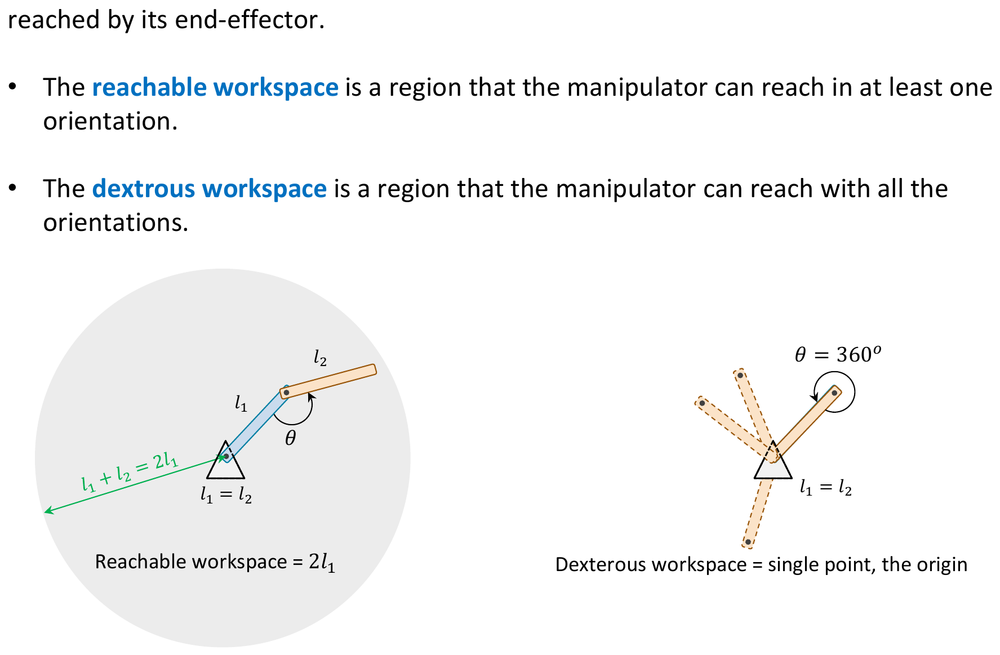
- Reachable workspace $= 2l_1$ (full disk)
- Dexterous workspace $=$ single point, the origin
Workspace Examples -- Unequal Link Lengths ($l_1 \neq l_2$) PDF p.6
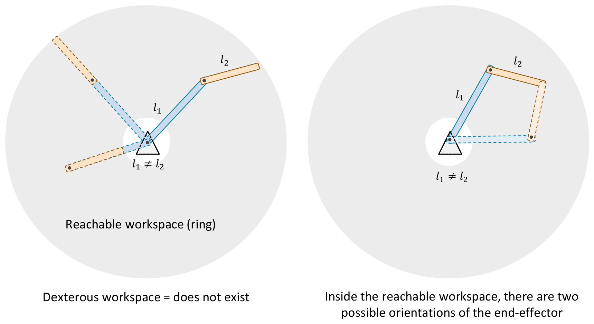
- Reachable workspace: ring (annulus)
- Dexterous workspace: does not exist
- Inside the reachable workspace, there are two possible orientations of the end-effector
Workspace Examples -- 3-DoF Manipulators PDF p.7
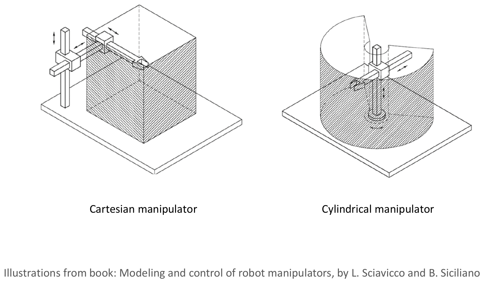
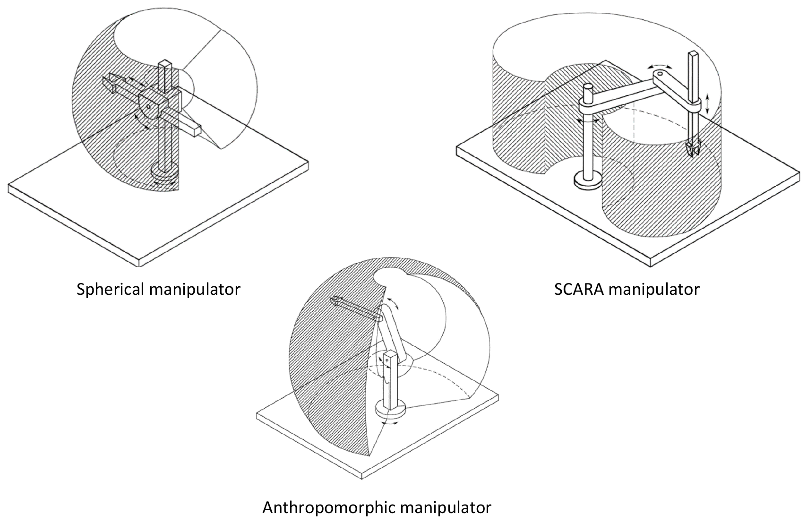
Illustrations from book: Modeling and control of robot manipulators, by L. Sciavicco and B. Siciliano
Understanding why workspaces have the shapes they do is essential for inverse kinematics, because a point outside the workspace has no IK solution.
What determines workspace shape:
- Link lengths -- The maximum reach is the sum of all link lengths (fully extended). The minimum reach (inner boundary) is determined by the difference in link lengths (fully folded). For a 2-link arm: outer radius $= l_1 + l_2$, inner radius $= |l_1 - l_2|$.
- Joint types -- Revolute joints create curved (circular/spherical) workspace boundaries. Prismatic joints create flat (linear/planar) boundaries. This is why a Cartesian robot has a box-shaped workspace while an anthropomorphic robot has a spherical shell.
- Joint limits -- Physical stops on joints reduce the theoretical workspace. A joint with $\pm 180°$ range sweeps a full circle, but a joint limited to $\pm 90°$ only sweeps a quarter.
- Link offsets and twists ($d_i$, $\alpha_i$) -- Non-zero DH parameters create asymmetries. The PUMA 560's workspace is not a perfect sphere because of its shoulder offset and elbow offset.
Why the dexterous workspace is so small (or empty):
The dexterous workspace requires reaching a point with every possible orientation. At the boundary of the reachable workspace, the arm is fully extended -- there is only one possible configuration, hence only one orientation. The deeper inside the workspace, the more configurations exist. For a 2R planar arm with $l_1 = l_2$, the only point reachable with all orientations is the origin (where the arm can fold in any direction).
Reference: Sciavicco, L. and Siciliano, B., Modeling and Control of Robot Manipulators, Springer. Also see Mecharithm's interactive workspace visualization: mecharithm.com
The dexterous workspace of a manipulator is the set of points that can be reached:
4.4 Multiple Solutions PDF p.9
A good choice would be the solution that minimizes the amount that each joint is required to move. In practice, other dynamic considerations like the weight of the arms should be taken into account.
- In the absence of an obstacle, the upper dashed configuration is preferred.
- In the presence of an obstacle on the path of the preferred configuration, the farther solution should be selected.
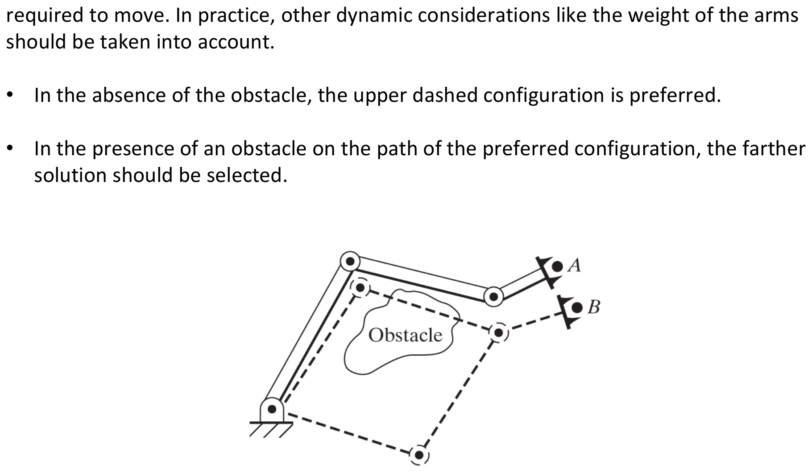
PUMA 560 Multiple Solutions PDF p.10
Number of possible solutions to reach a point in the reachable workspace of a PUMA 560 robot:
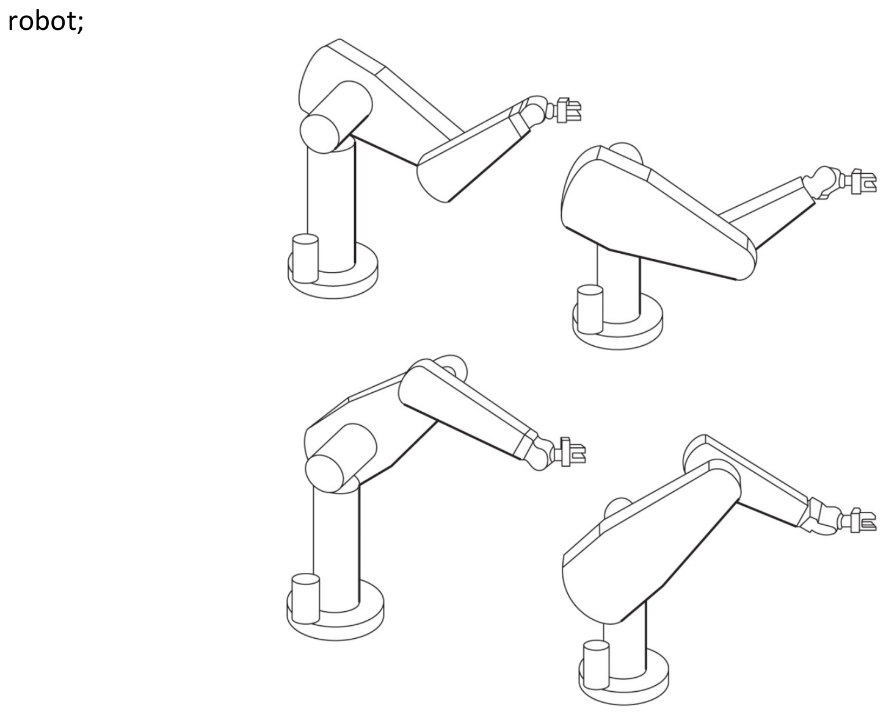
Number of Solutions vs. Link Parameters PDF p.11
Note: In general, the more nonzero link parameters there are, the more ways there will be to reach a certain point in the reachable workspace. The more that are nonzero, the bigger is the maximum number of solutions.
| $a_i$ | Number of solutions |
|---|---|
| $a_1 = a_3 = a_5 = 0$ | $\leq 4$ |
| $a_3 = a_5 = 0$ | $\leq 8$ |
| $a_3 = 0$ | $\leq 16$ |
| All $a_i \neq 0$ | $\leq 16$ |
Note: For a completely generally rotary-jointed manipulator with six degrees of freedom, there are up to sixteen solutions possible.
Multiple solutions arise because the trigonometric functions in the forward kinematics are periodic and symmetric. Specifically:
- Elbow up / elbow down. When you solve for $\theta_2$ from $c_2 = \frac{x^2 + y^2 - l_1^2 - l_2^2}{2l_1 l_2}$, the sine is $s_2 = \pm\sqrt{1 - c_2^2}$. The $\pm$ sign gives two valid values of $\theta_2$, corresponding to the elbow bending "up" or "down." Each choice of sign propagates through the remaining equations, producing a distinct full configuration.
- Shoulder left / shoulder right. For 3D manipulators, the base joint $\theta_1$ can often be set to point the shoulder on either side of the target, since $\text{Atan2}(y, x)$ and $\text{Atan2}(-y, -x)$ differ by $\pi$, and the remaining joints can compensate.
- Wrist flip. The three wrist joints ($\theta_4, \theta_5, \theta_6$) can often achieve the same final orientation by "flipping" -- rotating $\theta_5$ by $\pi$ and adjusting $\theta_4$ and $\theta_6$ by $\pi$ to compensate. This doubles the solution count.
Algebraically, each binary choice (elbow, shoulder, wrist) creates a factor of 2 in the total. For the PUMA 560: $2 \times 2 \times 2 = 8$ solutions. For the most general 6R robot (where additional link parameter choices create more branching), the polynomial system has degree 16, yielding up to 16 real solutions.
Classes of Solution Methods PDF p.12
- Numerical solutions: Slow due to their iterative nature. Not interested.
- Closed-form solutions: A solution method based on analytical expressions or the solution of a polynomial of degree 4 or less.
- AlgebraicA closed-form IK approach that starts from the forward kinematics matrix equation, equates individual matrix elements to the desired pose, and manipulates the resulting trigonometric equations using techniques like squaring-and-adding and half-angle substitution to isolate each joint variable.Craig, Introduction to Robotics, 4th ed., §4.5 · MSE 492 slides p.13–17
- GeometricA closed-form IK approach that decomposes the robot's spatial geometry into planar triangles and applies the law of cosines and basic trigonometric identities to solve for joint angles. It gives more physical intuition than the algebraic method but is harder to apply systematically to 3D robots.Craig, Introduction to Robotics, 4th ed., §4.5 · MSE 492 slides p.18
A sufficient condition that a manipulator with six revolute joints have a closed-form solution is that three neighboring joint axes intersect at a point. (Pieper's methodA closed-form inverse kinematics technique developed by Donald Pieper (Stanford, 1968) that exploits the fact that when three consecutive joint axes intersect at a point (forming a "spherical wrist"), the 6-DOF IK problem decouples into a 3-DOF position subproblem (first three joints) and a 3-DOF orientation subproblem (last three joints, solved via Euler angle decomposition).Pieper, D.L., "The Kinematics of Manipulators Under Computer Control," Stanford AI Memo 72, 1968 · Craig §4.7, discussed later in this chapter).
Almost every manipulator with 6-DoF built today has three intersecting axes.
The entire power of Pieper's method comes from kinematic decoupling: separating the 6-unknown IK problem into a 3-unknown position problem and a 3-unknown orientation problem. This decoupling is only possible when the last three joint axes meet at a single point (a "spherical wrist").
Why the intersection is essential:
- When three axes intersect, the origins of frames $\{4\}$, $\{5\}$, and $\{6\}$ coincide at the wrist center point. This means that rotating joints 4, 5, 6 changes the end-effector's orientation but does not move the wrist center.
- Therefore the wrist center position depends only on $\theta_1, \theta_2, \theta_3$. We can solve for these three angles from the three position equations $(x, y, z)$ alone -- a tractable 3-equation, 3-unknown system.
- Once $\theta_1, \theta_2, \theta_3$ are known, the rotation ${}^0_3 R$ is fully determined. The remaining orientation ${}^3_6 R = ({}^0_3 R)^T {}^0_6 R$ is a known rotation matrix, and extracting $\theta_4, \theta_5, \theta_6$ from it is the standard Z-Y-Z Euler angle decomposition.
What goes wrong without the intersection: If the three wrist axes do not intersect, then $\theta_4, \theta_5, \theta_6$ affect the end-effector position (not just orientation). Position and orientation become coupled through all six unknowns simultaneously. The resulting system of six coupled transcendental equations generally cannot be reduced to polynomials of degree $\leq 4$, so no closed-form solution is guaranteed. One must fall back to numerical iterative methods or handle higher-degree polynomial systems (up to degree 16).
The Robot Academy masterclass on "Inverse Kinematics and Robot Motion" includes a video lesson that demonstrates inverse kinematics for a general-purpose 6-DOF robot arm (the classical PUMA 560) in 3D. The video visually shows how the same end-effector pose can be reached by different joint configurations.
Robot Academy -- Inverse Kinematics for a General Purpose Robot Arm That Moves in 3D
robotacademy.net.au
The PUMA 560 has up to 8 solutions for a given end-effector pose (4 from the first three joints x 2 from the wrist). These correspond to combinations of:
- Shoulder left / shoulder right -- the base joint ($\theta_1$) can point the shoulder to either side
- Elbow up / elbow down -- the elbow joint ($\theta_3$) bends in two opposite directions
- Wrist flipped / not flipped -- the wrist ($\theta_5$) can achieve the same final orientation by flipping 180 degrees and adjusting $\theta_4$ and $\theta_6$
How to choose among solutions in practice:
- Closest to current configuration -- minimizes joint travel (fastest motion, least energy)
- Avoid joint limits -- reject solutions where any joint is near its mechanical stop
- Avoid singularities -- reject configurations where the Jacobian becomes singular (Chapter 5)
- Obstacle avoidance -- reject solutions whose intermediate links collide with known obstacles
- Manipulability -- prefer configurations that maximize the robot's ability to move in all directions
The slides dismiss numerical solutions as "slow" and "not interested." Here is the deeper engineering reason why this matters.
The real-time control loop:
In a typical robot controller, inverse kinematics must be computed at the servo rate -- typically 1 kHz (1000 times per second) for modern industrial robots, or at minimum 30 Hz as mentioned in Section 4.8. Each IK computation must complete in under 1 ms (or ~33 ms at 30 Hz).
Closed-form (analytical) solutions:
- Fixed number of arithmetic operations (additions, multiplications,
atan2calls) - Execution time is deterministic and constant -- always the same number of operations
- Typical computation: ~10-50 microseconds on modern hardware
- Returns all solutions simultaneously, allowing the controller to pick the best one
- Average speedup factor: 5-8x faster than numerical methods
Numerical solutions (Newton-Raphson, Jacobian pseudoinverse):
- Iterative: require multiple passes, each involving a Jacobian computation and matrix inversion
- Execution time is variable -- depends on how far the initial guess is from the solution
- May fail to converge if the initial guess is poor or near a singularity
- Typically finds only one solution per run (whichever is nearest to the initial guess)
- Average: 4-20 iterations, each involving $O(n^3)$ matrix operations
When numerical methods are necessary:
- Redundant manipulators (7+ DOF) where closed-form solutions generally do not exist
- Robots that do not satisfy Pieper's condition (no three intersecting axes)
- When additional constraints (obstacle avoidance, joint limit penalties) must be embedded in the solver
Reference: Lynch, K. and Park, F., Modern Robotics: Mechanics, Planning, and Control, Cambridge University Press, Chapter 6. Free video lectures: modernrobotics.northwestern.edu
A 6-DOF manipulator with all revolute joints can have up to how many IK solutions?
4.5 Inverse Kinematics -- Algebraic vs. Geometric PDF p.13
4.5.1 Algebraic Solution PDF p.13
Consider the three-link planar manipulator studied in Chapter 3 with the following link parameters.
| $i$ | $a_{i-1}$ | $\alpha_{i-1}$ | $d_i$ | $\theta_i$ |
|---|---|---|---|---|
| 1 | 0 | 0 | 0 | $\theta_1$ |
| 2 | $L_1$ | 0 | 0 | $\theta_2$ |
| 3 | $L_2$ | 0 | 0 | $\theta_3$ |
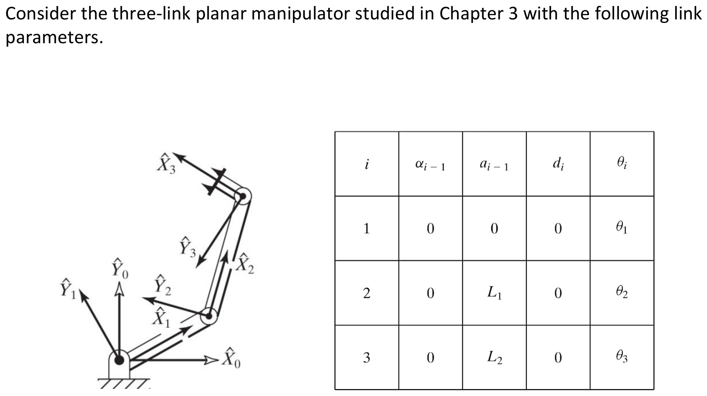
Goal Point Specification PDF p.14
The goal point is a specification of the wrist frame relative to the base frame, that is:
$${}^{BT}_{W}T = {}^{0}_{3}T = \begin{bmatrix} c_{123} & -s_{123} & 0.0 & l_1 c_1 + l_2 c_{12} \\ s_{123} & c_{123} & 0.0 & l_1 s_1 + l_2 s_{12} \\ 0.0 & 0.0 & 1.0 & 0.0 \\ 0 & 0 & 0 & 1 \end{bmatrix}$$Given the planar nature of motion for this manipulator, the goal point can be specified using $x$, $y$, and $\phi$ where $\phi$ is the orientation of link 3 in the plane (relative to the $+\hat{X}$ axis).
$${}^{BT}_{W}T = \begin{bmatrix} c_\phi & -s_\phi & 0.0 & x \\ s_\phi & c_\phi & 0.0 & y \\ 0.0 & 0.0 & 1.0 & 0.0 \\ 0 & 0 & 0 & 1 \end{bmatrix}$$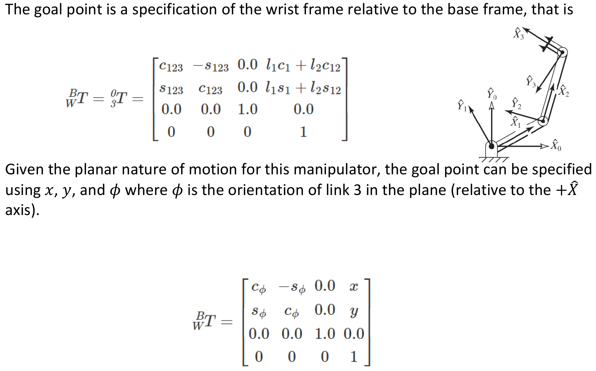
Algebraic Solution: Solving the Four Nonlinear Equations PDF p.15
Four nonlinear equations must be solved:
$$c_\phi = c_{123}$$ $$s_\phi = s_{123}$$ $$x = l_1 c_1 + l_2 c_{12}$$ $$y = l_1 s_1 + l_2 s_{12}$$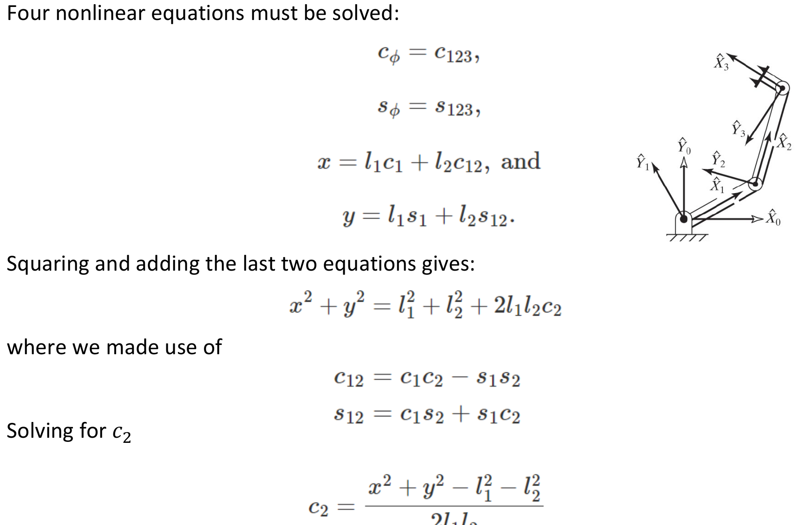
Squaring and adding the last two equations gives:
$$x^2 + y^2 = l_1^2 + l_2^2 + 2 l_1 l_2 c_2$$where we made use of:
$$c_{12} = c_1 c_2 - s_1 s_2$$ $$s_{12} = c_1 s_2 + s_1 c_2$$Solving for $c_2$:
$$c_2 = \frac{x^2 + y^2 - l_1^2 - l_2^2}{2 l_1 l_2}$$Assuming the goal is in the workspace, for $s_2$ we obtain:
$$s_2 = \pm\sqrt{1 - c_2^2}$$Hence, $\theta_2$ can be found:
$$\theta_2 = \text{Atan2}(s_2, c_2)$$Having found $\theta_2$, $\theta_1$ can be found. Rewrite the position equations as:
$$x = k_1 c_1 - k_2 s_1$$ $$y = k_1 s_1 + k_2 c_1$$where:
$$k_1 = l_1 + l_2 c_2$$ $$k_2 = l_2 s_2$$Performing a change of variable $r = +\sqrt{k_1^2 + k_2^2}$ and $\gamma = \text{Atan2}(k_2, k_1)$:
$$k_1 = r \cos\gamma$$ $$k_2 = r \sin\gamma$$Substituting: PDF p.17
$$\frac{x}{r} = \cos\gamma \cos\theta_1 - \sin\gamma \sin\theta_1$$ $$\frac{y}{r} = \cos\gamma \sin\theta_1 + \sin\gamma \cos\theta_1$$So:
$$\cos(\gamma + \theta_1) = \frac{x}{r}$$ $$\sin(\gamma + \theta_1) = \frac{y}{r}$$Using the two-argument arctangent:
$$\gamma + \theta_1 = \text{Atan2}\left(\frac{y}{r}, \frac{x}{r}\right) = \text{Atan2}(y, x)$$And so:
$$\theta_1 = \text{Atan2}(y, x) - \text{Atan2}(k_2, k_1)$$Solving for the sum of $\theta_1$ through $\theta_3$:
$$\theta_1 + \theta_2 + \theta_3 = \text{Atan2}(s_\phi, c_\phi) = \phi$$Therefore:
$$\theta_3 = \phi - \theta_1 - \theta_2$$Robot Academy provides two companion video lessons that solve the exact same 2-link robot problem using both methods:
1. Geometric approach:
robotacademy.net.au -- Geometric approach
- Starts by drawing the triangle formed by the two links and the line to the goal
- Uses the law of cosines directly to find $\theta_2$
- Finds $\theta_1$ using angles $\beta$ and $\psi$ from the geometry
2. Algebraic approach:
robotacademy.net.au -- Algebraic approach
- Starts from the forward kinematics matrix ${}^{0}_{2}T$
- Equates matrix elements to the desired pose
- Manipulates the resulting trigonometric equations algebraically
Key insight: Both methods arrive at the same equations (e.g., $c_2 = \frac{x^2 + y^2 - l_1^2 - l_2^2}{2l_1 l_2}$). The geometric approach gives more physical intuition; the algebraic approach is more systematic and scales to 3D robots where geometric visualization becomes difficult.
4.5.2 Geometric Solution PDF p.18
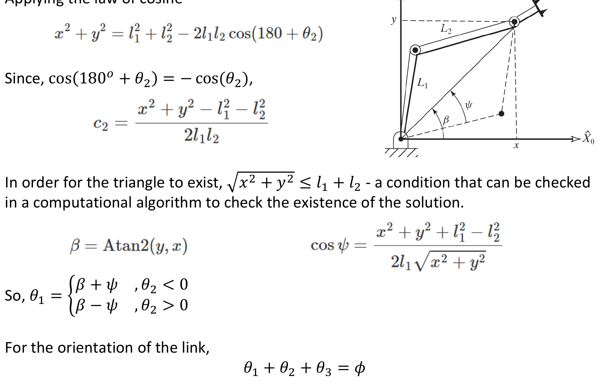
Applying the law of cosines:
$$x^2 + y^2 = l_1^2 + l_2^2 - 2 l_1 l_2 \cos(180° + \theta_2)$$Since $\cos(180° + \theta_2) = -\cos(\theta_2)$:
$$c_2 = \frac{x^2 + y^2 - l_1^2 - l_2^2}{2 l_1 l_2}$$In order for the triangle to exist, $\sqrt{x^2 + y^2} \leq l_1 + l_2$ -- a condition that can be checked in a computational algorithm to verify the existence of the solution.
Finding $\theta_1$:
$$\beta = \text{Atan2}(y, x)$$ $$\cos\psi = \frac{x^2 + y^2 + l_1^2 - l_2^2}{2 l_1 \sqrt{x^2 + y^2}}$$So:
$$\theta_1 = \begin{cases} \beta + \psi & , \; \theta_2 < 0 \\ \beta - \psi & , \; \theta_2 > 0 \end{cases}$$Finding $\theta_3$ from orientation:
$$\theta_1 + \theta_2 + \theta_3 = \phi$$Starting point -- the position equations:
$$x = l_1 \cos\theta_1 + l_2 \cos(\theta_1 + \theta_2)$$ $$y = l_1 \sin\theta_1 + l_2 \sin(\theta_1 + \theta_2)$$Squaring both:
$$x^2 = l_1^2 \cos^2\theta_1 + 2l_1 l_2 \cos\theta_1 \cos(\theta_1 + \theta_2) + l_2^2 \cos^2(\theta_1 + \theta_2)$$ $$y^2 = l_1^2 \sin^2\theta_1 + 2l_1 l_2 \sin\theta_1 \sin(\theta_1 + \theta_2) + l_2^2 \sin^2(\theta_1 + \theta_2)$$Adding (and using $\cos^2\alpha + \sin^2\alpha = 1$):
$$x^2 + y^2 = l_1^2 + l_2^2 + 2l_1 l_2 \left[\cos\theta_1 \cos(\theta_1 + \theta_2) + \sin\theta_1 \sin(\theta_1 + \theta_2)\right]$$The key identity -- the bracketed term is a cosine difference:
$$\cos\theta_1 \cos(\theta_1 + \theta_2) + \sin\theta_1 \sin(\theta_1 + \theta_2) = \cos\left[(\theta_1 + \theta_2) - \theta_1\right] = \cos\theta_2$$Result:
$$x^2 + y^2 = l_1^2 + l_2^2 + 2l_1 l_2 \cos\theta_2$$The geometric interpretation: $x^2 + y^2$ is the squared distance from the base to the end-effector. This distance depends only on how much the elbow is bent ($\theta_2$), not on which direction the arm is pointing ($\theta_1$). This is obvious geometrically -- rotating the entire arm about the base changes $\theta_1$ but not the distance to the tip.
This same principle -- that the squared distance from the origin eliminates the base rotation angle -- is exactly what Pieper exploits in Step 5 (equation $r = g_1^2 + g_2^2 + g_3^2$) to eliminate $\theta_1$ from the 6-DOF problem.
4.6 Algebraic Solution by Reduction to Polynomial PDF p.19
Transcendental Function: In mathematics, a transcendental function is an analytic function that does not satisfy a polynomial equation, in contrast to an algebraic function.
Key Technique -- Half-Angle Substitution
Transcendental equations are difficult to solve. The following substitutions are often used:
$$u = \tan\frac{\theta}{2}$$ $$\cos\theta = \frac{1 - u^2}{1 + u^2}$$ $$\sin\theta = \frac{2u}{1 + u^2}$$These substitutions convert transcendental equations in $\sin\theta$ and $\cos\theta$ into polynomial equations in $u$, which can then be solved using standard algebraic techniques.
The half-angle substitution used in this chapter is also known as the Weierstrass substitution in calculus. Here is a self-contained derivation of why $u = \tan(\theta/2)$ converts $\sin\theta$ and $\cos\theta$ into rational functions of $u$.
Starting point -- the double-angle identities:
$$\cos\theta = \cos^2\frac{\theta}{2} - \sin^2\frac{\theta}{2}$$ $$\sin\theta = 2\sin\frac{\theta}{2}\cos\frac{\theta}{2}$$Divide numerator and denominator of $\cos\theta$ by $\cos^2(\theta/2)$:
$$\cos\theta = \frac{\cos^2(\theta/2) - \sin^2(\theta/2)}{\cos^2(\theta/2) + \sin^2(\theta/2)} = \frac{1 - \tan^2(\theta/2)}{1 + \tan^2(\theta/2)} = \frac{1 - u^2}{1 + u^2}$$(We multiplied top and bottom by $\frac{1}{\cos^2(\theta/2)}$ and used $\cos^2 + \sin^2 = 1$ in the denominator.)
Similarly for $\sin\theta$:
$$\sin\theta = \frac{2\sin(\theta/2)\cos(\theta/2)}{\cos^2(\theta/2) + \sin^2(\theta/2)} = \frac{2\tan(\theta/2)}{1 + \tan^2(\theta/2)} = \frac{2u}{1 + u^2}$$Why this is powerful for robotics:
Any equation of the form $a\cos\theta + b\sin\theta = c$ becomes:
$$a\cdot\frac{1-u^2}{1+u^2} + b\cdot\frac{2u}{1+u^2} = c$$Multiplying through by $(1 + u^2)$ gives a polynomial in $u$:
$$(c+a)u^2 - 2bu + (c-a) = 0$$This is a quadratic, solvable by the quadratic formula. The two roots correspond to the (up to) two solutions for $\theta$ -- matching the physical reality that there are typically two robot configurations (e.g., elbow-up and elbow-down).
Geometric interpretation: The substitution $u = \tan(\theta/2)$ is the stereographic projection of the unit circle onto the real line. Each point on the circle (except $\theta = \pi$, where $u \to \infty$) maps to exactly one real number, and vice versa.
The substitution misses $\theta = \pi$ (since $\tan(\pi/2)$ is undefined). In robotics, this corresponds to the arm being fully folded back on itself -- a boundary case that usually needs separate treatment.
Reference: Tangent half-angle substitution (Wikipedia) and ProofWiki -- Weierstrass Substitution
Problem: Convert the transcendental equation $a\cos\theta + b\sin\theta = c$ into a polynomial in the tangent of the half angle and solve for $\theta$.
Solution:
Substituting the half-angle identities:
$$a\left(\frac{1 - u^2}{1 + u^2}\right) + b\left(\frac{2u}{1 + u^2}\right) = c$$Multiplying through by $(1 + u^2)$:
$$a(1 - u^2) + 2bu = c(1 + u^2)$$Rearranging:
$$(a + c)u^2 - 2bu + (c - a) = 0$$Solving the quadratic:
$$u = \frac{b \pm \sqrt{b^2 + a^2 - c^2}}{a + c}$$Therefore:
$$\theta = 2\tan^{-1}\left(\frac{b \pm \sqrt{b^2 + a^2 - c^2}}{a + c}\right)$$Note: The condition for real solutions is $a^2 + b^2 \geq c^2$.
4.7 Pieper's Solution when Three Axes Intersect PDF p.20
Setup and Definitions
Consider a PUMA serial robot. The last three axes intersect; the origins of link frames $\{4\}$, $\{5\}$, and $\{6\}$, i.e. Wrist Bend, Swivel, and Roll, are all located at this point of intersection. Knowing $x$, $y$, and $z$ and three orientations, i.e. $\alpha$, $\theta$, and $\gamma$ of frame $\{6\}$ with respect to frame $\{0\}$, the transformation matrix between the two frames from Chapter 2 is:
$${}^{0}T_6 = \begin{bmatrix} {}^{0}R_6 & {}^{0}P_{6ORG} \\ 0 \quad 0 \quad 0 & 1 \end{bmatrix}$$Where:
$${}^{0}R_6 = \begin{bmatrix} r_{11} & r_{12} & r_{13} \\ r_{21} & r_{22} & r_{23} \\ r_{31} & r_{32} & r_{33} \end{bmatrix}$$is the rotation matrix, and:
$${}^{0}P_{6ORG} = \begin{bmatrix} x \\ y \\ z \end{bmatrix}$$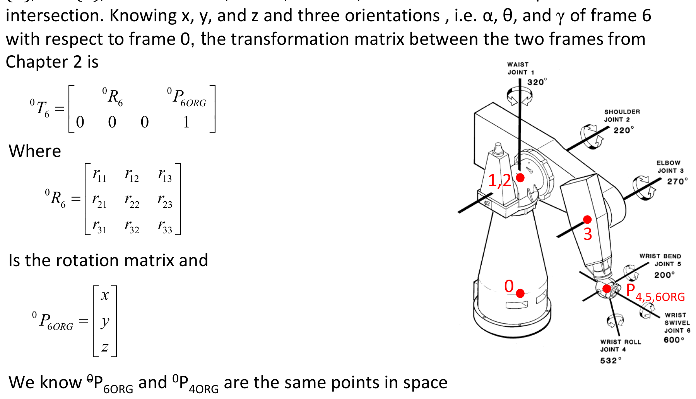
We know ${}^{0}P_{6ORG}$ and ${}^{0}P_{4ORG}$ are the same points in space (since frames $\{4\}$, $\{5\}$, $\{6\}$ all have their origins at the wrist intersection point).
Pieper's method is arguably the most important practical technique in this chapter. The core idea deserves emphasis because the derivation that follows is lengthy and can obscure the simple underlying principle.
The fundamental insight:
A 6-DOF robot with a spherical wrist (last 3 axes intersecting) can be split into two independent subproblems:
- Position problem (joints 1, 2, 3): Where is the wrist center point?
- Orientation problem (joints 4, 5, 6): What is the orientation at that wrist center?
This works because the last three joints ($\theta_4$, $\theta_5$, $\theta_6$) rotate about the wrist center but do not move it. The wrist center position depends only on $\theta_1$, $\theta_2$, $\theta_3$.
- Compute the wrist center from the desired end-effector pose. Since frames $\{4\}$, $\{5\}$, $\{6\}$ share the same origin (the wrist center), we know: ${}^{0}P_{4ORG} = {}^{0}P_{6ORG}$. The wrist center position in the base frame is simply the position part of ${}^{0}T_6$.
- Solve for $\theta_1$, $\theta_2$, $\theta_3$ using only the wrist center position $(x, y, z)$. This is a 3-variable, 3-equation problem. The clever algebraic manipulations (squaring to eliminate $\theta_1$, defining $f$ and $g$ functions, using half-angle substitution) are all techniques for solving this reduced subproblem.
- With $\theta_1$, $\theta_2$, $\theta_3$ known, compute ${}^{0}_{3}R$ (the rotation from base to frame 3). Then solve: ${}^{3}_{6}R = ({}^{0}_{3}R)^{-1} \cdot {}^{0}_{6}R$. This gives a known numerical rotation matrix on the left. The right side is a product of three rotation matrices involving $\theta_4$, $\theta_5$, $\theta_6$. This is the Z-Y-Z Euler angle decomposition from Chapter 2.
Why "almost every 6-DOF robot" is designed this way:
Pieper proved that the IK has a closed-form solution whenever three consecutive axes intersect. Robot designers deliberately create spherical wrists to satisfy this condition, because closed-form IK is essential for real-time control. The engineering trade-off is clear: a spherical wrist slightly limits the workspace and dexterity, but guarantees fast, reliable, deterministic inverse kinematics.
Reference: Craig, J.J., Introduction to Robotics: Mechanics and Control, 4th ed., Chapter 4. Also: Clemson Open Textbook -- Inverse Kinematics
Pieper's Method -- Full Derivation
From Chapter 3 we have:
$${}^{0}T_6 = {}^{0}T_1 \; {}^{1}T_2 \; {}^{2}T_3 \; {}^{3}T_4 \; {}^{4}T_5 \; {}^{5}T_6 = \begin{bmatrix} {}^{0}R_6 & {}^{0}P_{6ORG} \\ 0 \quad 0 \quad 0 & 1 \end{bmatrix}$$Also:
$${}^{0}T_6 = {}^{0}T_4 \; {}^{4}T_5 \; {}^{5}T_6 = \begin{bmatrix} {}^{0}R_4 & {}^{0}P_{4ORG} \\ 0 \quad 0 \quad 0 & 1 \end{bmatrix} {}^{4}T_5 \; {}^{5}T_6 = \begin{bmatrix} {}^{0}R_6 & {}^{0}P_{6ORG} \\ 0 \quad 0 \quad 0 & 1 \end{bmatrix}$$We know:
$${}^{0}P_{4ORG} = {}^{0}P_{6ORG}$$Therefore, for only matching the positions, we do not need to calculate the whole ${}^{0}T_6$.
From Chapter 3, for any two adjacent joints we have the general DH transform:
$${}^{i-1}T_i = \begin{bmatrix} c\theta_i & -s\theta_i & 0 & a_{i-1} \\ s\theta_i c\alpha_{i-1} & c\theta_i c\alpha_{i-1} & -s\alpha_{i-1} & -d_i s\alpha_{i-1} \\ s\theta_i s\alpha_{i-1} & c\theta_i s\alpha_{i-1} & c\alpha_{i-1} & d_i c\alpha_{i-1} \\ 0 & 0 & 0 & 1 \end{bmatrix}$$Therefore:
$${}^{3}T_4 = \begin{bmatrix} c\theta_4 & -s\theta_4 & 0 & a_3 \\ s\theta_4 c\alpha_3 & c\theta_4 c\alpha_3 & -s\alpha_3 & -d_4 s\alpha_3 \\ s\theta_4 s\alpha_3 & c\theta_4 s\alpha_3 & c\alpha_3 & d_4 c\alpha_3 \\ 0 & 0 & 0 & 1 \end{bmatrix}$$and:
$${}^{3}P_{4ORG} = \begin{bmatrix} a_3 \\ -d_4 s\alpha_3 \\ d_4 c\alpha_3 \\ 1 \end{bmatrix}$$The following relationship will give us 3 nonlinear equations which can be used to find $\theta_1$, $\theta_2$, and $\theta_3$:
$${}^{0}P_{4ORG} = {}^{0}T_1 \; {}^{1}T_2 \; {}^{2}T_3 \begin{bmatrix} a_3 \\ -d_4 s\alpha_3 \\ d_4 c\alpha_3 \\ 1 \end{bmatrix} = \begin{bmatrix} x \\ y \\ z \\ 1 \end{bmatrix}$$Define $f_1$, $f_2$, and $f_3$ as follows:
$$\begin{bmatrix} f_1 \\ f_2 \\ f_3 \\ 1 \end{bmatrix} = {}^{2}T_3 \begin{bmatrix} a_3 \\ -d_4 s\alpha_3 \\ d_4 c\alpha_3 \\ 1 \end{bmatrix}$$Expanding:
$$f_1 = a_3 c_3 + d_4 s\alpha_3 s_3 + a_2$$ $$f_2 = a_3 c\alpha_2 s_3 - d_4 s\alpha_3 c\alpha_2 c_3 - d_4 s\alpha_2 c\alpha_3 - d_3 s\alpha_2$$ $$f_3 = a_3 s\alpha_2 s_3 - d_4 s\alpha_3 s\alpha_2 c_3 + d_4 c\alpha_2 c\alpha_3 + d_3 c\alpha_2$$$f_1$, $f_2$, and $f_3$ are only functions of $\theta_3$.
Using ${}^{1}_{2}T$ and ${}^{0}_{1}T$:
$${}^{0}P_{4ORG} = \begin{bmatrix} c_1 g_1 - s_1 g_2 \\ s_1 g_1 + c_1 g_2 \\ g_3 \\ 1 \end{bmatrix} = \begin{bmatrix} x \\ y \\ z \\ 1 \end{bmatrix}$$where:
$$g_1 = c_2 f_1 - s_2 f_2 + a_1$$ $$g_2 = s_2 c\alpha_1 f_1 + c_2 c\alpha_1 f_2 - s\alpha_1 f_3 - d_2 s\alpha_1$$ $$g_3 = s_2 s\alpha_1 f_1 + c_2 s\alpha_1 f_2 + c\alpha_1 f_3 + d_2 c\alpha_1$$$g_1$, $g_2$, and $g_3$ are only functions of $\theta_2$ and $\theta_3$.
Now, writing an expression for the squared magnitude of ${}^{0}P_{4ORG}$:
$$r = x^2 + y^2 + z^2$$ $$= (c_1 g_1 - s_1 g_2)^2 + (s_1 g_1 + c_1 g_2)^2 + g_3^2$$ $$= g_1^2 + g_2^2 + g_3^2$$ $$= f_1^2 + f_2^2 + f_3^2 + a_1^2 + d_2^2 + 2d_2 f_3 + 2a_1(c_2 f_1 - s_2 f_2)$$Let:
$$k_1 = f_1$$ $$k_2 = -f_2$$ $$k_3 = f_1^2 + f_2^2 + f_3^2 + a_1^2 + d_2^2 + 2d_2 f_3$$ $$k_4 = f_3 c\alpha_1 + d_2 c\alpha_1$$We can rewrite the equations for $r$ and $z$ as:
$$r = (k_1 c_2 + k_2 s_2) 2a_1 + k_3$$ $$z = (k_1 s_2 - k_2 c_2) s\alpha_1 + k_4$$The original slide (page 25) has a sign error: it writes $k_1 s_2 + k_2 c_2$, but direct expansion of $g_3$ with $k_2 = -f_2$ gives $k_1 s_2 - k_2 c_2$. The corrected sign is confirmed by the fact that squaring and adding the $r$ and $z$ equations must yield $k_1^2 + k_2^2$ (cross terms cancel only with opposite signs on the $k_2$ terms).
These two equations are useful as they eliminate the dependence on $\theta_1$. Dependence on $\theta_2$ has taken a simple form.
Consider three distinguished cases for the solution of $\theta_3$:
Case 1: If $a_1 = 0$, then $r = k_3$ where $r$ is known. The right side ($k_3$) is a function of $\theta_3$ only. Using transcendental equations (half-angle substitution), the quadratic equation in $\tan\frac{\theta_3}{2}$ can be solved for $\theta_3$.
Case 2: If $s\alpha_1 = 0$, then $z = k_4$, where $z$ is known. Using transcendental equations, the quadratic equation can be solved for $\theta_3$.
Case 3: PDF p.26 Otherwise,
$$\frac{r - k_3}{2a_1} = k_1 c_2 + k_2 s_2$$ $$\frac{z - k_4}{s\alpha_1} = k_1 s_2 - k_2 c_2$$Squaring and adding:
$$\left(\frac{r - k_3}{2a_1}\right)^2 + \left(\frac{z - k_4}{s\alpha_1}\right)^2 = k_1^2 + k_2^2$$This removes the dependency on $\theta_2$.
Using transcendental equations (half-angle substitution), the above equation becomes of degree 4, that can be solved for $\theta_3$.
Next is to solve for $\theta_4$, $\theta_5$, and $\theta_6$.
The rotation portion of ${}^{0}_{6}R$ can be used.
$${}^{3}_{6}R = {}^{0}_{3}R^{-1} \; {}^{0}_{6}R = \begin{bmatrix} r_{11} & r_{12} & r_{13} \\ r_{21} & r_{22} & r_{23} \\ r_{31} & r_{32} & r_{33} \end{bmatrix}$$Expanding the individual rotation matrices:
$${}^{3}_{6}R = {}^{3}_{4}R \; {}^{4}_{5}R \; {}^{5}_{6}R = \begin{bmatrix} c_4 & -s_4 & 0 \\ s_4 & c_4 & 0 \\ 0 & 0 & 1 \end{bmatrix} \begin{bmatrix} c_5 & -s_5 & 0 \\ 0 & 0 & -1 \\ s_5 & c_5 & 0 \end{bmatrix} \begin{bmatrix} c_6 & -s_6 & 0 \\ 0 & 0 & 1 \\ -s_6 & -c_6 & 0 \end{bmatrix}$$ $${}^{3}_{6}R = \begin{bmatrix} c_4 c_5 c_6 - s_4 s_6 & -c_4 c_5 s_6 - s_4 c_6 & -c_4 s_5 \\ s_4 c_5 c_6 + c_4 s_6 & -s_4 c_5 s_6 + c_4 c_6 & -s_4 s_5 \\ s_5 c_6 & -s_5 s_6 & c_5 \end{bmatrix}$$For many manipulators, these last three angles can be solved for by using the $Z - Y - Z$ Euler angle solution (from Chapter 2), applied to ${}^{3}_{6}R$.
Z-Y-Z Euler Angle Solution (Reminder from Section 2.8) PDF p.28
Forward problem: With the Euler angle representation, the rotation matrices are post-multiplied.
$${}^{A}_{B}R_{ZY'Z''}(\alpha, \beta, \gamma) = \begin{bmatrix} c\alpha c\beta c\gamma - s\alpha s\gamma & -c\alpha c\beta s\gamma - s\alpha c\gamma & c\alpha s\beta \\ s\alpha c\beta c\gamma + c\alpha s\gamma & -s\alpha c\beta s\gamma + c\alpha c\gamma & s\alpha s\beta \\ -s\beta c\gamma & s\beta s\gamma & c\beta \end{bmatrix} = \begin{bmatrix} r_{11} & r_{12} & r_{13} \\ r_{21} & r_{22} & r_{23} \\ r_{31} & r_{32} & r_{33} \end{bmatrix}$$You consider $\alpha$, $\beta$, and $\gamma$ as $\theta_4$, $\theta_5$, and $\theta_6$.
Inverse problem:
$$\theta_5 = \text{Atan2}\left(\sqrt{r_{31}^2 + r_{32}^2}, \; r_{33}\right)$$ $$\theta_4 = \text{Atan2}(r_{23}/s\beta, \; r_{13}/s\beta)$$ $$\theta_6 = \text{Atan2}(r_{32}/s\beta, \; -r_{31}/s\beta)$$where $s\beta = \sin\theta_5$. Note: when $\theta_5 = 0$ (or $\pi$), $s\beta = 0$ and the formulas for $\theta_4$ and $\theta_6$ involve division by zero -- this is a wrist singularityA configuration where the wrist's first and third axes ($Z_4$ and $Z_6$) become collinear (i.e., $\theta_5 = 0$ or $\pi$). In this pose, joints 4 and 6 produce the same rotation, so only their sum or difference is determined -- the robot loses one degree of orientational freedom. The Jacobian drops rank, and the Z-Y-Z Euler angle extraction becomes degenerate (division by $\sin\theta_5 = 0$).Craig, Introduction to Robotics, 4th ed., §5.5 · Wikipedia: Gimbal lock.
The following video resources demonstrate the kinematic decoupling approach used in Pieper's method:
1. Modern Robotics -- Numerical Inverse Kinematics (Part 1)
modernrobotics.northwestern.edu (Part 1)
While this video covers the numerical approach (Newton-Raphson), it provides excellent context for understanding why the analytical approach (Pieper's method) is preferred when available.
2. Modern Robotics -- Numerical Inverse Kinematics (Part 2)
modernrobotics.northwestern.edu (Part 2)
Part 2 shows an animation of a 4-joint RRRP arm converging to a solution over Newton-Raphson iterations.
3. RoboGrok -- Inverse Kinematics of a SCARA Manipulator (Angela Sodemann)
robogrok.com
This video walks through the graphical/geometric approach to inverse kinematics for a SCARA robot, which is a simpler case of kinematic decoupling.
Summary of the complete Pieper algorithm:
- Extract $(x, y, z)$ from the desired ${}^{0}T_6$ -- this is the wrist center
- Solve for $\theta_3$ using half-angle substitution on the squared-distance equation (eliminates both $\theta_1$ and $\theta_2$)
- Solve for $\theta_2$ using the simplified $r$ and $z$ equations (now that $\theta_3$ is known)
- Solve for $\theta_1$ from $x = c_1 g_1 - s_1 g_2$ and $y = s_1 g_1 + c_1 g_2$
- Compute ${}^{3}_{6}R = ({}^{0}_{3}R)^T \cdot {}^{0}_{6}R$ (all quantities now known)
- Solve for $\theta_4$, $\theta_5$, $\theta_6$ using Z-Y-Z Euler angle extraction
Pieper's method for closed-form IK requires that:
4.8 Computational Considerations PDF p.29
In many path-controlled schemes (Chapter 7), it is necessary to calculate the inverse kinematics of a manipulator at 30 Hz or faster. For computational efficiency, one may consider the following:
- Using a lookup-table for
atan2routine. - Structure the computation of multiple solutions in parallel (rather than pursuing them one after another serially).
- Using fixed- over floating-point representation of the quantities involved in calculation (it is possible since the variables do not have large dynamic range, and the ranges are fairly well-known).
- Factorization of equations to reduce the number of multiplications and additions -- this comes at the cost of creating local variables (good trade-off).
- Avoid the computation of redundant kinematics, e.g., calculate only two columns of rotation, then compute the third column using cross product.
- For transcendental functions, they can be computed from a series expansion.
The slides dismiss numerical methods as "slow" and "not interested," but understanding them provides important context for appreciating the closed-form solutions in this chapter.
Modern Robotics Chapter 6 -- Inverse Kinematics of Open Chains
modernrobotics.northwestern.edu
| Method | Speed | Guarantees | Use case |
|---|---|---|---|
| Closed-form (Pieper) | ~10-50 us | All solutions found, deterministic | 6-DOF with spherical wrist |
| Newton-Raphson | ~0.1-1 ms | May not converge; finds one solution | General 6-DOF without Pieper condition |
| Jacobian pseudoinverse | ~0.1-5 ms | Handles redundancy; may oscillate | 7+ DOF redundant robots |
| CCD (Cyclic Coordinate Descent) | ~1-10 ms | Simple; may get stuck | Animation, games |
| FABRIK | ~0.5-5 ms | Fast convergence; no orientation | Animation, humanoid posing |
Key takeaway for this course: The computational considerations in Section 4.8 (lookup tables, fixed-point, factorization) are optimization techniques applied to closed-form solutions to squeeze them into the tightest possible real-time deadlines. Numerical methods would need all these optimizations plus would still be iterative and non-deterministic.
Additional reference: Hauser, K., Robotic Systems (online textbook), Chapter on Inverse Kinematics: motion.cs.illinois.edu
PDF p.30 Let The Learning Continue
Key Equations Summary
where $k_1 = l_1 + l_2 c_2$ and $k_2 = l_2 s_2$.
where $\beta = \text{Atan2}(y, x)$ and $\cos\psi = \frac{x^2 + y^2 + l_1^2 - l_2^2}{2 l_1 \sqrt{x^2 + y^2}}$.
where $k_1 = f_1$, $k_2 = -f_2$, $k_3 = f_1^2 + f_2^2 + f_3^2 + a_1^2 + d_2^2 + 2d_2 f_3$, $k_4 = f_3 c\alpha_1 + d_2 c\alpha_1$.
where $\alpha, \beta, \gamma$ correspond to $\theta_4, \theta_5, \theta_6$ and $s\beta = \sin\theta_5$.
Dexterous: points reachable with ALL orientations.
Dexterous $\subseteq$ Reachable.
Allows decoupling position (first 3 joints) from orientation (last 3 joints).
Converts trig equations into polynomial equations that can be solved algebraically.
Multiple solutions arise from elbow-up/down, shoulder-left/right, wrist-flip configurations.